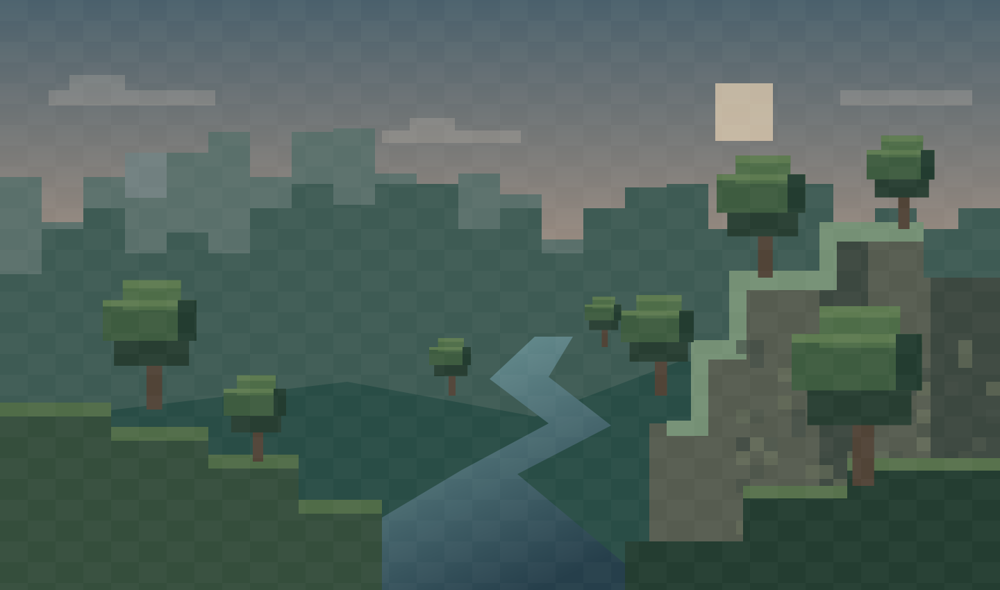

YOUR NEXT ADVENTURE
A whole world.
One click away.
From the classics to something new.
Choose your version. Make it your own.
THE COLLECTION
Find your version.
Eight versions. Fourteen builds. Pick your next adventure.
No versions match your search.
LOCAL SANDBOX
Preview modules.
Try enhancements in the included 2D test world. These settings do not modify remotely hosted games.
PREFERENCES
Launcher settings.
Your selections are saved in this browser. Graphics and controls below apply to the local preview only.
Preview graphics
Preview controls
WASD / arrows: move · Space: jump · Right Shift: modules · Escape: close preview
GOOD TO KNOW
Your launch hub.
01 / Choose a build
Select a game version, then JavaScript or WebAssembly. Versions 26.2 and 26.3 are WASM-only; JavaScript is disabled for them. The launch button opens the selected GX-hosted page directly in a new tab, without an iframe.
02 / Browser compatibility
WebAssembly support alone does not guarantee that every build works: some need newer Wasm features or special browser/host headers. If a WASM build fails, try JavaScript where available. Remote availability cannot be checked reliably from this static launcher.
03 / Preview versus real clients
The built-in 2D preview demonstrates the eight modules. Remote GX pages run on a different origin; their game state, rendering, and controls cannot be modified by this launcher. Your launcher preferences are not sent to them.
04 / Reference & independence
The layout was informed by GX's public source: compact title bar, player sidebar, artwork panel, and bottom version/launch strip. This is an independent implementation with original artwork, not an official GX client.